UNIDAD 3
Páginas 81-115 | 5 Temas | 35 páginas
"Los átomos se unen para formar moléculas. Las moléculas se unen para formar materiales. Los materiales construyen nuestro mundo."
En esta unidad descubrirás cómo los átomos se conectan entre sí mediante diferentes tipos de enlaces químicos. Comprenderás por qué la sal se disuelve en agua, por qué el diamante es tan duro y por qué los metales conducen electricidad.
| Tema | Contenido | Págs. |
|---|---|---|
| 3.1 | Estructuras de Lewis | 81-86 |
| 3.2 | Enlace iónico | 87-92 |
| 3.3 | Enlace covalente | 93-99 |
| 3.4 | Enlace metálico | 100-107 |
| 3.5 | Fuerzas intermoleculares | 108-115 |
Exploremos tus conocimientos previos sobre enlaces químicos.
1. ¿Por qué crees que los átomos se unen entre sí?
2. La sal de mesa (NaCl) se disuelve en agua, pero el aceite no. ¿A qué crees que se deba?
3. ¿Por qué los cables eléctricos son de cobre y no de madera?
4. Observa las siguientes sustancias y predice si conducen electricidad:
| Sustancia | ¿Conduce? (Sí/No) | ¿Por qué crees? |
|---|---|---|
| Alambre de cobre | ||
| Agua pura | ||
| Sal sólida | ||
| Sal disuelta en agua |
Los electrones de valencia son los electrones del último nivel de energía de un átomo. Son los responsables de formar enlaces químicos.
En una línea: Los electrones de valencia son los que "se ven" y participan en las uniones entre átomos.
Los átomos tienden a ganar, perder o compartir electrones hasta tener 8 electrones en su capa de valencia (como los gases nobles).
Excepciones importantes:
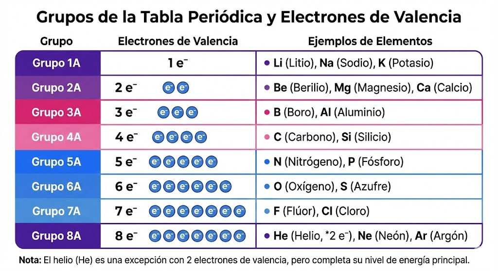
Gilbert N. Lewis propuso una representación simple donde el símbolo del elemento se rodea de puntos que representan sus electrones de valencia.
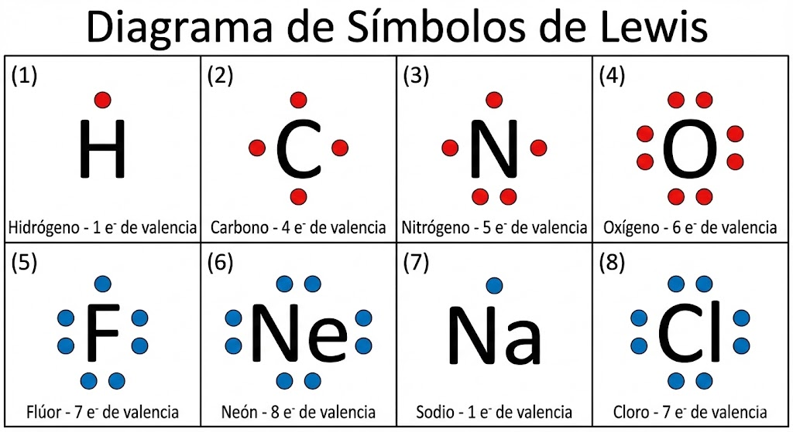
Dibuja el símbolo de Lewis para los siguientes elementos:
Azufre (S, Grupo 6A)
Fósforo (P, Grupo 5A)
Calcio (Ca, Grupo 2A)
Para representar moléculas, conectamos los símbolos de Lewis de los átomos mostrando cómo comparten electrones para formar enlaces.
Paso 1: Total de electrones
O = 6 e⁻, H = 1 e⁻ (×2)
Total = 6 + 1 + 1 = 8 e⁻
Paso 2: Átomo central
Oxígeno (más electronegativo, pero H nunca es central)
Paso 3-5: Estructura final
2 enlaces O-H (4 e⁻ usados)
2 pares libres en O (4 e⁻)
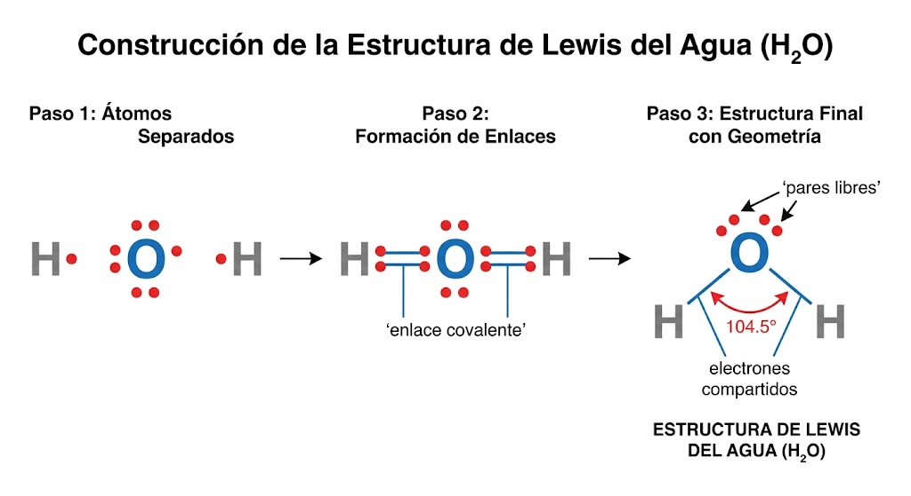
Instrucciones: Dibuja la estructura de Lewis para cada molécula. Muestra todos los electrones.
1. Cloro molecular (Cl₂)
Total e⁻: 7 + 7 = 14
2. Ácido clorhídrico (HCl)
Total e⁻: 1 + 7 = 8
3. Amoníaco (NH₃)
Total e⁻: 5 + 3(1) = 8
4. Metano (CH₄)
Total e⁻: 4 + 4(1) = 8
5. Dióxido de carbono (CO₂)
Total e⁻: 4 + 2(6) = 16 (¡Necesita dobles enlaces!)
6. Nitrógeno molecular (N₂)
Total e⁻: 5 + 5 = 10 (¡Necesita triple enlace!)
El enlace iónico es la fuerza de atracción electrostática entre iones de carga opuesta, formados cuando un átomo transfiere electrones a otro.
En una línea: Un átomo "da" electrones, otro los "recibe", y se atraen por tener cargas opuestas.
Cationes y aniones se atraen formando una red cristalina
La sal de mesa es el ejemplo clásico de compuesto iónico. Veamos paso a paso cómo se forma a partir de sodio metálico y cloro gaseoso.
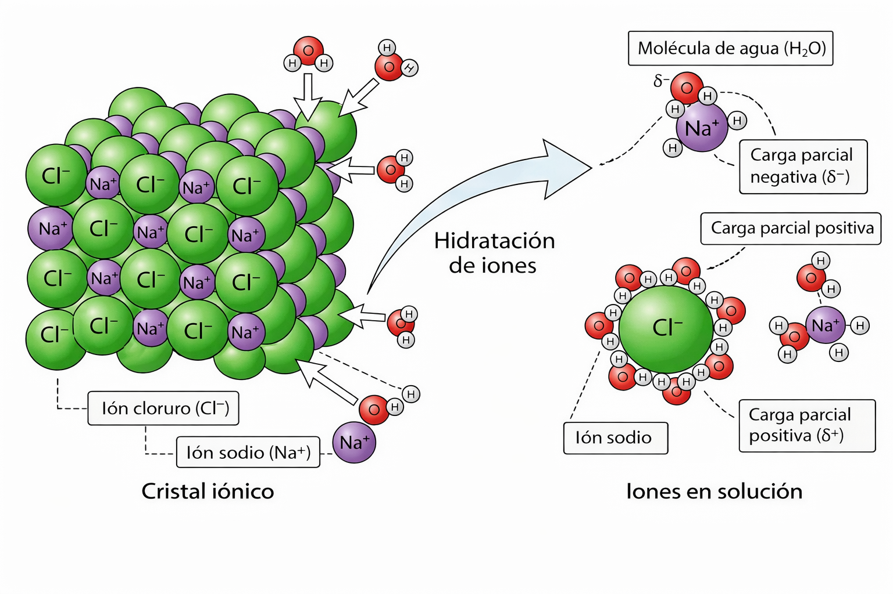
| Paso | Sodio (Na) | Cloro (Cl) |
|---|---|---|
| Inicial | 11 p⁺, 11 e⁻ (neutro) | 17 p⁺, 17 e⁻ (neutro) |
| Config. valencia | 1 electrón de valencia | 7 electrones de valencia |
| Transferencia | Pierde 1 e⁻ | Gana 1 e⁻ |
| Final | Na⁺ (11 p⁺, 10 e⁻) | Cl⁻ (17 p⁺, 18 e⁻) |
| Config. final | Como el neón (8 e⁻ valencia) | Como el argón (8 e⁻ valencia) |
Los compuestos iónicos no existen como moléculas individuales. Los iones se organizan en una red cristalina tridimensional donde cada ion está rodeado de iones de carga opuesta.
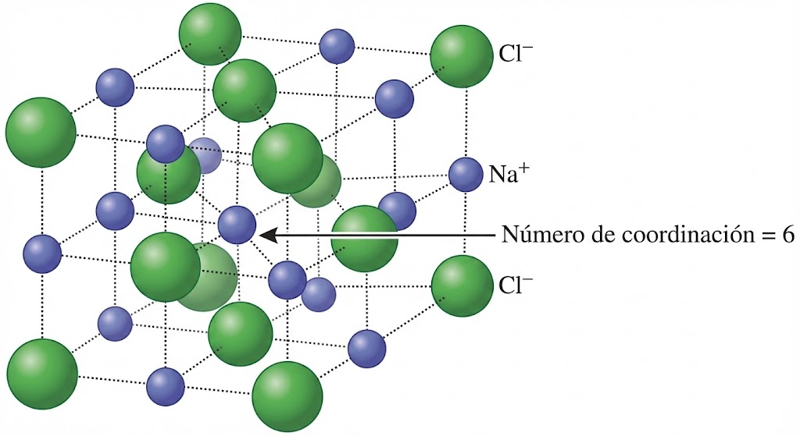
| Propiedad | Característica | Explicación |
|---|---|---|
| Punto de fusión | Alto (>400°C) | Se necesita mucha energía para romper la red |
| Dureza | Alta, pero frágiles | Estructura rígida que se rompe al desplazarse |
| Solubilidad | Solubles en agua | El agua polar separa los iones |
| Conductividad (sólido) | No conduce | Iones fijos en la red |
| Conductividad (fundido/disolución) | Sí conduce | Iones libres para moverse |
La formación de un compuesto iónico involucra la transferencia completa de electrones desde el metal al no metal.
Paso 1: Configuraciones iniciales
Na: [Ne] 3s¹ (1 e⁻ valencia)
Cl: [Ne] 3s² 3p⁵ (7 e⁻ valencia)
Paso 2: Transferencia
Na → Na⁺ + e⁻
Cl + e⁻ → Cl⁻
Paso 3: Formación de la red cristalina
Los iones Na⁺ y Cl⁻ se atraen electrostáticamente y forman una estructura cúbica ordenada donde cada Na⁺ está rodeado de 6 Cl⁻ y viceversa.
| Proceso | Energía | Descripción |
|---|---|---|
| Ionización del metal | +496 kJ/mol (Na) | Se requiere energía para quitar e⁻ |
| Afinidad electrónica del no metal | -349 kJ/mol (Cl) | Se libera energía al ganar e⁻ |
| Energía reticular | -787 kJ/mol | Gran liberación al formar la red |
La energía reticular es la energía liberada cuando los iones gaseosos forman un sólido cristalino. Es lo que hace que los compuestos iónicos sean tan estables.
| Compuesto | Fórmula | Iones | Uso común |
|---|---|---|---|
| Cloruro de sodio | NaCl | Na⁺, Cl⁻ | Sal de mesa, conservante |
| Carbonato de calcio | CaCO₃ | Ca²⁺, CO₃²⁻ | Tiza, antiácidos, mármol |
| Óxido de magnesio | MgO | Mg²⁺, O²⁻ | Refractarios, suplementos |
| Fluoruro de sodio | NaF | Na⁺, F⁻ | Pasta dental |
| Cloruro de potasio | KCl | K⁺, Cl⁻ | Sustituto de sal, fertilizante |
| Hidróxido de sodio | NaOH | Na⁺, OH⁻ | Jabones, limpiadores |
Completa la tabla indicando el ion formado:
| Elemento | Config. electrónica | e⁻ que pierde/gana | Ion formado |
|---|---|---|---|
| Calcio (Ca) | [Ar] 4s² | ||
| Bromo (Br) | [Ar] 4s² 3d¹⁰ 4p⁵ | ||
| Aluminio (Al) | [Ne] 3s² 3p¹ | ||
| Oxígeno (O) | [He] 2s² 2p⁴ |
Escribe la fórmula del compuesto formado por:
| Catión | Anión | Fórmula | Nombre |
|---|---|---|---|
| Na⁺ | Cl⁻ | ||
| Mg²⁺ | O²⁻ | ||
| Al³⁺ | Cl⁻ | ||
| Ca²⁺ | F⁻ | ||
| K⁺ | S²⁻ |
Para escribir fórmulas iónicas, cruza las cargas como subíndices: Al³⁺ + O²⁻ → Al₂O₃ (el 3 del Al pasa al O, y el 2 del O pasa al Al).
El enlace covalente se forma cuando dos átomos comparten uno o más pares de electrones para completar sus octetos.
En una línea: Ningún átomo "da" ni "recibe" electrones; ambos los comparten.
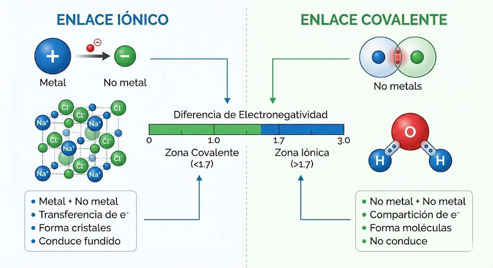
Los átomos pueden compartir 1, 2 o 3 pares de electrones, formando enlaces simples, dobles o triples respectivamente.
| Tipo | Pares compartidos | Representación | Ejemplo | Fuerza |
|---|---|---|---|---|
| Simple | 1 par (2 e⁻) | — (una línea) | H—H, C—H | Más débil |
| Doble | 2 pares (4 e⁻) | = (dos líneas) | O=O, C=O | Intermedia |
| Triple | 3 pares (6 e⁻) | ≡ (tres líneas) | N≡N, C≡C | Más fuerte |
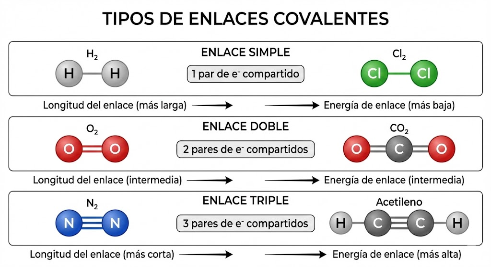
A mayor número de enlaces entre dos átomos:
• Mayor energía de enlace (más difícil de romper)
• Menor longitud de enlace (átomos más cerca)
No todos los enlaces covalentes son iguales. La diferencia de electronegatividad entre los átomos determina si el enlace es polar o no polar.
Los electrones se comparten equitativamente.
Los electrones están más cerca del átomo más electronegativo.
EN(H) = 2.1, EN(Cl) = 3.0
ΔEN = 3.0 - 2.1 = 0.9 → Enlace covalente polar
Los electrones pasan más tiempo cerca del Cl, creando un dipolo: δ⁺H—Cl δ⁻
No siempre. Una molécula es polar solo si los dipolos de sus enlaces NO se cancelan. Depende de la geometría molecular.
| Pares* | Libres | Geometría | Hibridación | Ángulo |
|---|---|---|---|---|
| 2 | 0 | Lineal | sp | 180° |
| 3 | 0 | Trigonal Plana | sp² | 120° |
| 3 | 1 | Angular | sp² | <120° |
| 4 | 0 | Tetraédrica | sp³ | 109.5° |
| 4 | 1 | Piramidal | sp³ | <109.5° |
| 4 | 2 | Angular | sp³ | 104.5° |
* Pares de electrones (enlaces + libres) alrededor del átomo central.
| Molécula | Geometría | ¿Enlaces polares? | ¿Molécula polar? |
|---|---|---|---|
| H₂O | Angular (104.5°) | Sí | Sí (dipolos no se cancelan) |
| CO₂ | Lineal (180°) | Sí | No (dipolos se cancelan) |
| NH₃ | Piramidal | Sí | Sí (dipolos no se cancelan) |
| CH₄ | Tetraédrica | Ligeramente | No (simétrica) |
| CCl₄ | Tetraédrica | Sí | No (simétrica) |
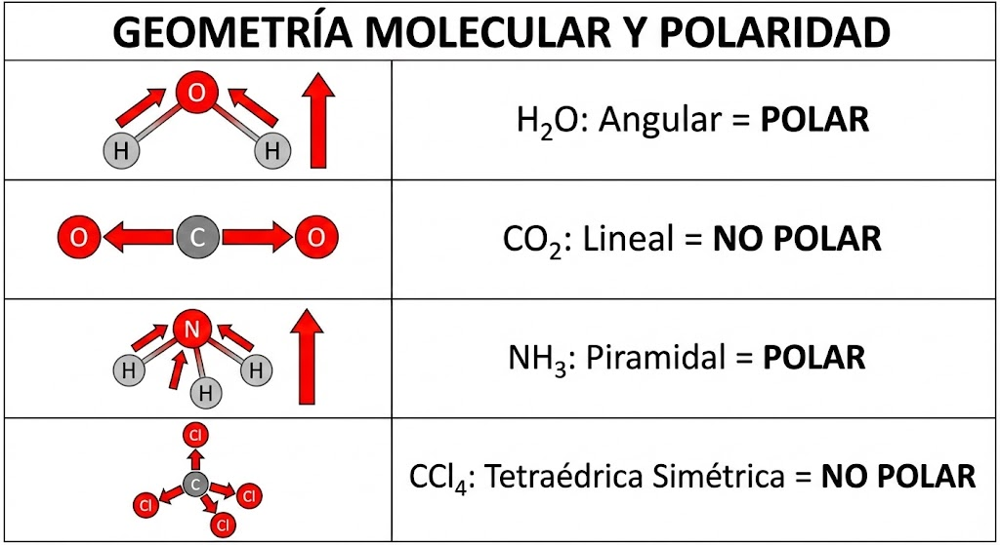
| Propiedad | Covalentes moleculares | Covalentes de red |
|---|---|---|
| Punto de fusión | Bajo (-200°C a 300°C) | Muy alto (>1000°C) |
| Punto de ebullición | Bajo | Muy alto |
| Estado a 25°C | Gas, líquido o sólido blando | Sólido muy duro |
| Conductividad | No conducen | No conducen (excepto grafito) |
| Solubilidad | Polares en agua, no polares en aceite | Insolubles |
| Ejemplos | H₂O, CO₂, CH₄, azúcar | Diamante, cuarzo (SiO₂) |
Las sustancias polares se disuelven en solventes polares (agua). Las sustancias no polares se disuelven en solventes no polares (aceite, gasolina). Por eso el aceite no se mezcla con agua.
En el diamante, cada átomo de C está unido covalentemente a otros 4 átomos de C formando una red tridimensional infinita. No hay "moléculas" individuales, por eso es tan duro y tiene punto de fusión altísimo (3550°C).
Paso 1: Total e⁻ valencia
O: 6 e⁻
H: 1 e⁻ × 2 = 2 e⁻
Total: 8 e⁻
Paso 2-4: Esqueleto y octetos
O tiene 2 pares enlazantes y 2 pares libres
Para elegir la mejor estructura:
Si hay varias estructuras válidas que solo difieren en posición de electrones, la real es un híbrido
de resonancia (promedio).
Ej: O₃, CO₃²⁻, SO₂.
| Molécula | e⁻ totales | Estructura | Pares libres (central) |
|---|---|---|---|
| CH₄ | 8 | H-C-H con 4 H | 0 |
| NH₃ | 8 | :N-H₃ | 1 |
| CO₂ | 16 | O=C=O | 0 |
| HCN | 10 | H-C≡N: | 0 (en C) |
Clasifica cada enlace como no polar, polar o iónico:
| Enlace | ΔEN | Tipo |
|---|---|---|
| H—H | 0 | |
| C—O | 1.0 | |
| Na—Cl | 2.1 | |
| C—H | 0.4 | |
| O—H | 1.4 |
¿La molécula es polar o no polar? Justifica.
| Molécula | Geometría | ¿Polar? | Justificación |
|---|---|---|---|
| HF | Lineal | ||
| BF₃ | Trigonal plana | ||
| H₂S | Angular | ||
| CF₄ | Tetraédrica |
La polaridad molecular es crucial en farmacología. Los medicamentos deben tener la polaridad correcta para atravesar membranas celulares (no polares) pero también disolverse en la sangre (polar). Es un balance delicado.
TEMA 3.4
El enlace metálico ocurre entre átomos de metales. Los electrones de valencia se deslocalizan y forman un "mar de electrones" que rodea a los cationes metálicos.
En una línea: Cationes metálicos (+) nadando en un mar de electrones (-).
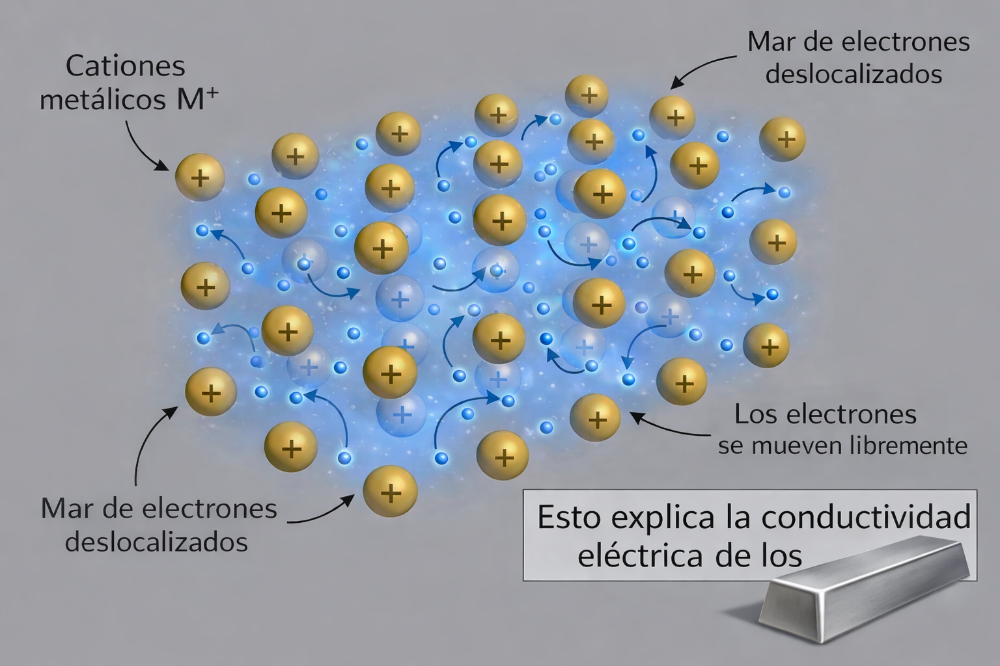
El modelo del "mar de electrones" explica todas las propiedades características de los metales:
| Propiedad | Descripción | Explicación |
|---|---|---|
| Conductividad eléctrica | Excelentes conductores | Electrones libres transportan carga |
| Conductividad térmica | Excelentes conductores de calor | Electrones transfieren energía cinética |
| Maleabilidad | Se pueden laminar | Cationes se deslizan sin romper el enlace |
| Ductilidad | Se pueden estirar en hilos | Misma razón que maleabilidad |
| Brillo | Superficie brillante | Electrones absorben y reemiten luz |
| Alto punto de fusión | Generalmente alto | Enlace fuerte entre cationes y electrones |
En metales, cuando los cationes se desplazan, el mar de electrones se adapta. En compuestos iónicos, al desplazar los iones, cargas iguales quedan juntas y se repelen, fracturando el cristal.
| Metal | Símbolo | Propiedades destacadas | Aplicaciones |
|---|---|---|---|
| Hierro | Fe | Fuerte, abundante, magnético | Construcción, acero, maquinaria |
| Aluminio | Al | Ligero, resistente a corrosión | Aviones, latas, ventanas |
| Cobre | Cu | Excelente conductor, maleable | Cables eléctricos, tuberías |
| Oro | Au | Inerte, muy maleable | Joyería, electrónica, medicina |
| Plata | Ag | Mejor conductor, antibacterial | Electrónica, joyería, medicina |
| Titanio | Ti | Fuerte, ligero, biocompatible | Implantes, aeronáutica |
Na: 98°C (1 e⁻ valencia) < Mg: 650°C (2 e⁻) < Al: 660°C (3 e⁻) < Fe: 1538°C (múltiples e⁻ d)
Una aleación es una mezcla homogénea de dos o más metales (o un metal con un no metal). Tiene propiedades mejoradas respecto a los metales puros.
| Aleación | Composición | Propiedades | Usos |
|---|---|---|---|
| Acero | Fe + C (0.2-2%) | Más duro que Fe | Construcción, herramientas |
| Acero inoxidable | Fe + Cr + Ni | Resistente a corrosión | Cocina, medicina |
| Bronce | Cu + Sn | Duro, resistente | Esculturas, campanas |
| Latón | Cu + Zn | Dorado, maleable | Instrumentos, decoración |
| Duraluminio | Al + Cu + Mg | Ligero y resistente | Aviones, bicicletas |
| Amalgama | Hg + Ag + otros | Moldeable, endurece | Empastes dentales (histórico) |
Átomos de diferente tamaño distorsionan la red regular, dificultando el deslizamiento de capas. Esto aumenta la dureza y resistencia.
Lista 5 objetos de tu casa hechos de metal y completa:
| Objeto | Metal/Aleación | Propiedad aprovechada |
|---|---|---|
Las aleaciones con memoria de forma (como el nitinol: Ni-Ti) "recuerdan" su forma original y vuelven a ella al calentarse. Se usan en stents cardíacos y ortodoncia.
TEMA 3.5
Fuerzas INTRAmoleculares
Enlaces DENTRO de la molécula (iónico, covalente). Son fuertes (100-400 kJ/mol).
Fuerzas INTERmoleculares
Atracciones ENTRE moléculas diferentes. Son débiles (0.1-40 kJ/mol).
Determinan propiedades físicas como: punto de fusión, punto de ebullición, viscosidad, tensión superficial y solubilidad. El agua líquida existe gracias a sus fuertes fuerzas intermoleculares.
| Tipo | Ocurre entre | Fuerza | Ejemplos |
|---|---|---|---|
| Dispersión de London | Todas las moléculas | Muy débil (0.1-10 kJ/mol) | He, CH₄, I₂ |
| Dipolo-dipolo | Moléculas polares | Débil (5-25 kJ/mol) | HCl, H₂S |
| Puente de hidrógeno | H unido a F, O o N | Moderada (10-40 kJ/mol) | H₂O, NH₃, HF |
| Ion-dipolo | Iones y moléculas polares | Fuerte (50-200 kJ/mol) | NaCl en agua |
Ocurren en todas las moléculas. Se deben a dipolos temporales causados por fluctuaciones en la distribución electrónica.
Son más fuertes en moléculas más grandes (más electrones = mayor polarizabilidad). Por eso I₂ es sólido pero F₂ es gas a temperatura ambiente.
Ion-dipolo > Puente H > Dipolo-dipolo > Dispersión London
Es una atracción especialmente fuerte entre un átomo de H unido a F, O o N, y un par libre de electrones de otro átomo de F, O o N.
Se representa como: X-H···Y donde la línea punteada es el puente de hidrógeno.
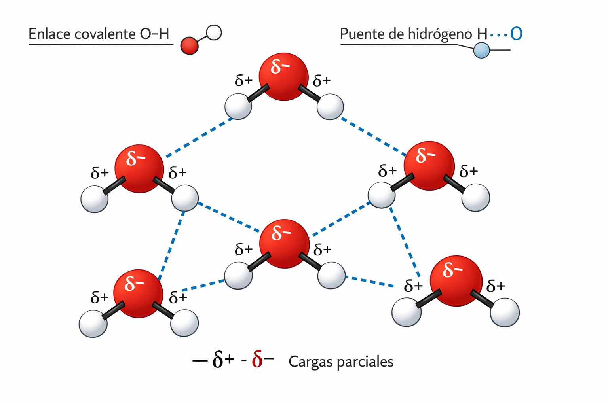
A mayor fuerza intermolecular:
• Mayor punto de fusión y ebullición
• Mayor viscosidad
• Mayor tensión superficial
• Menor presión de vapor
| Sustancia | Masa molar | P.E. (°C) | Fuerza principal |
|---|---|---|---|
| He | 4 g/mol | -269 | London (muy débil) |
| CH₄ | 16 g/mol | -161 | London |
| HCl | 36 g/mol | -85 | Dipolo-dipolo + London |
| H₂O | 18 g/mol | 100 | Puente H + dipolo + London |
| HF | 20 g/mol | 20 | Puente H fuerte |
El H₂O tiene punto de ebullición mucho más alto que el H₂S (masa similar) porque forma puentes de hidrógeno. Sin ellos, el agua herviría a -80°C y la vida como la conocemos no existiría.
Las sustancias se disuelven en solventes con fuerzas intermoleculares similares. Sustancias polares en solventes polares; no polares en no polares.
| Soluto | Polaridad | Soluble en agua | Soluble en aceite |
|---|---|---|---|
| NaCl (sal) | Iónico | Sí | No |
| Azúcar (glucosa) | Polar | Sí | No |
| Etanol | Polar | Sí | Parcialmente |
| Aceite | No polar | No | Sí |
| Gasolina | No polar | No | Sí |
Las moléculas de jabón tienen una parte polar (que se une al agua) y una parte no polar (que se une a la grasa). Actúan como "puente" entre el agua y la grasa, permitiendo eliminar la suciedad. Se llaman anfifílicas.
Es la tendencia de un líquido a minimizar su área superficial. Las moléculas de la superficie son atraídas hacia el interior.
Ejemplo: Gotas de agua son esféricas; insectos caminan sobre agua.
Es el ascenso o descenso de un líquido en tubos estrechos. Depende de la adhesión (líquido-sólido) vs cohesión (líquido-líquido).
Ejemplo: El agua sube en plantas; el mercurio baja en tubos.
| Líquido | Tensión (mN/m) | Fuerza principal |
|---|---|---|
| Mercurio | 485 | Enlace metálico |
| Agua | 73 | Puentes de hidrógeno |
| Etanol | 22 | Puentes H + dipolo |
| Acetona | 24 | Dipolo-dipolo |
| Hexano | 18 | London |
La viscosidad es la resistencia de un fluido a fluir. Depende de la fuerza de las interacciones intermoleculares y de la forma de las moléculas.
| Factor | Efecto | Ejemplo |
|---|---|---|
| Fuerzas intermoleculares | Más fuertes → más viscoso | Miel > agua > gasolina |
| Tamaño molecular | Más grandes → más viscoso | Polímeros > moléculas pequeñas |
| Forma molecular | Más largas → más viscoso | Cadenas se enredan |
| Temperatura | Más caliente → menos viscoso | Aceite frío vs caliente |
Los aceites de motor deben fluir bien en frío (para arrancar) pero no ser muy delgados en caliente. Por eso existen aceites "multigrado" (ej: 10W-40) que mantienen viscosidad adecuada en un rango amplio de temperaturas.
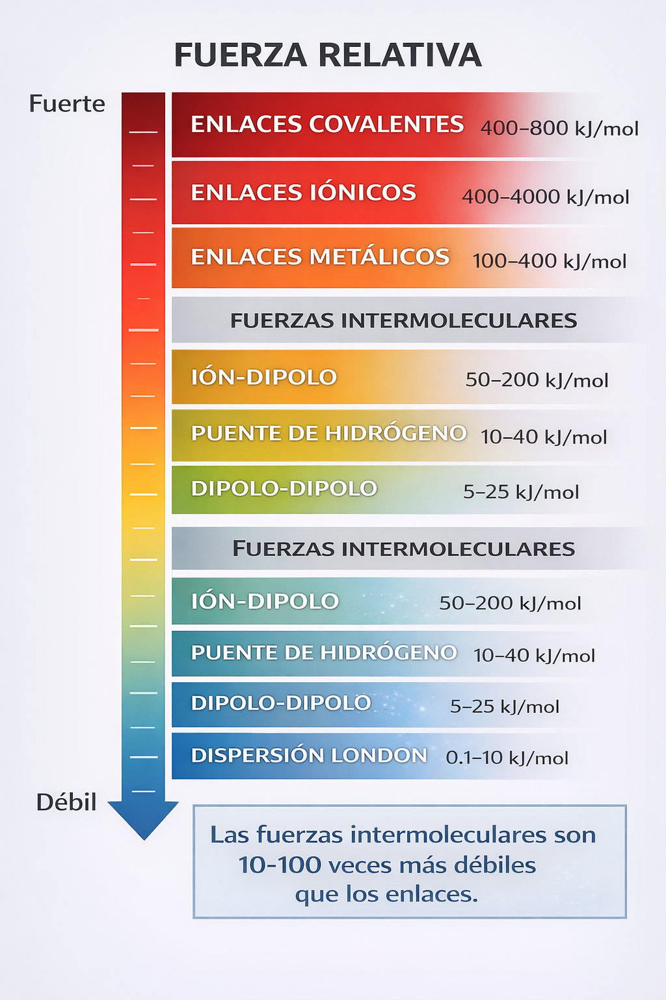
| Interacción | Partículas | Fuerza | Propiedades |
|---|---|---|---|
| Iónico | Iones | Muy fuerte | Alto PF, conduce fundido, frágil |
| Covalente | Átomos | Fuerte | Variable según estructura |
| Metálico | Cationes + e⁻ | Variable | Conduce, maleable, brillo |
| Puente H | Moléculas | Moderada | PF alto para su tamaño |
| Dipolo | Moléculas | Débil | PF moderado |
| London | Todas | Muy débil | PF bajo (gases/líquidos) |
Indica la fuerza intermolecular principal en cada sustancia:
| Sustancia | Fórmula | Fuerza principal |
|---|---|---|
| Neón | Ne | |
| Agua | H₂O | |
| Dióxido de carbono | CO₂ | |
| Amoníaco | NH₃ | |
| Metano | CH₄ | |
| Ácido fluorhídrico | HF |
Los geckos pueden caminar por paredes y techos gracias a millones de pequeños pelos en sus patas. Estos pelos generan fuerzas de dispersión de London suficientes para soportar su peso. Científicos están desarrollando adhesivos "gecko-inspirados" para robots y aplicaciones médicas.
Superficies inspiradas en la hoja de loto repelen el agua gracias a su estructura nanométrica que minimiza el contacto. Se usan en vidrios autolimpiantes, textiles impermeables y recubrimientos anticorrosión.
La separación de mezclas en cromatografía depende de las diferentes fuerzas intermoleculares entre los componentes y la fase estacionaria. Es fundamental en análisis farmacéutico, forense y ambiental.
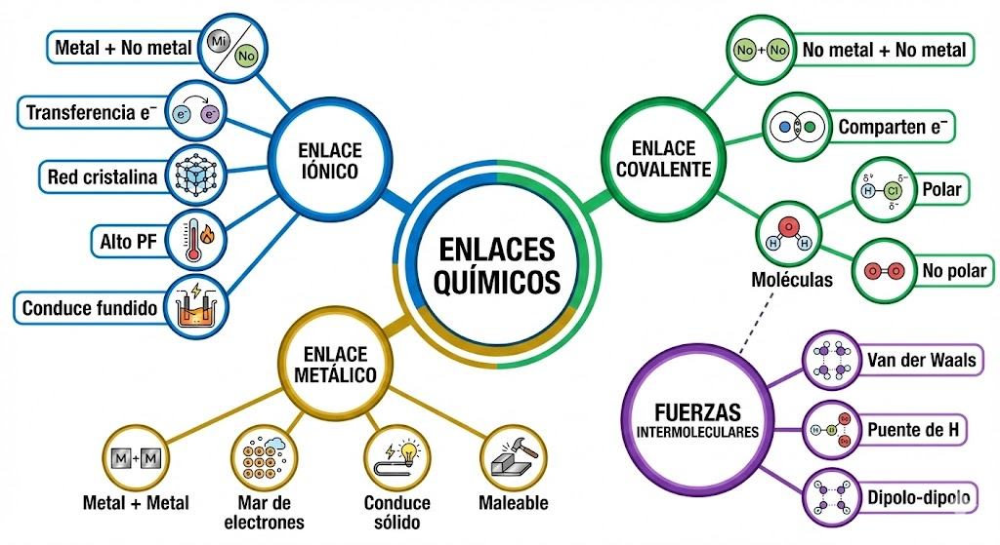
"Los enlaces químicos son los 'pegamentos' de la materia. Entender cómo se unen los átomos te permite predecir propiedades, diseñar materiales y comprender procesos desde la cocina hasta la industria farmacéutica."
Siguiente: Unidad 4 - Lenguaje Químico y Seguridad Industrial